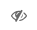
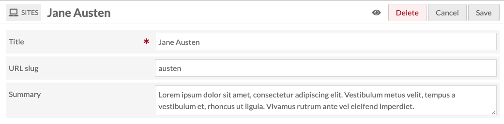

Sites are the public-facing side of an Omeka-S installation. With sites you can create content and interpretation around a group of items from your installation.
Sites are managed and access via the Sites tab on the left-hand side of the administrative dashboard.

The manage sites page displays a table with all the sites for the installation, giving the title and owner for each site.
Use the two drop-downs on the right side above the table to sort sites. You can sort by title, URL slug or owner, either ascending or descending. Click the sort button to apply your choices.
Above the table of sites, on the left, is the pagination for the item sets table, where you can click the left and right arrows to move forward and back or enter a page number to go a specific page of item sets.
Each row gives the title of a site, options to view (box with outward arrow), edit (pencil), or delete (trash can), and displays the owner of the site. Only global admins and site owners can delete a site.
Sites which are not public will have the private icon (an eye with a slash through it) display to the right of the site title.
Clicking on the site title will take you to a summary page for the site which displays the site’s url slug, and title, from which you can return to the site list using a button on the left side of the scree, or edit or view the site using buttons in the upper right
Adding a site
To create a site, click the Add new site button in the upper right-hand corner of the site browse page.
The Add New Site page has three tabs: Admin, Theme, and Item Pool.
The Admin tab
- Give your site a title (required)
- create a slug for the site’s url. The url will be installurl/site/slug. This is optional - if you leave this field blank, Omeka S will create a slug based on the site title.
- Create a summary for your site, a brief idea of what it is about which will appear on your installation's landing page and on list of site blocks
The Theme tab
Select from the installed themes. Each theme appears as a button with a screenshot of the theme, the theme name, and a link to its creator. When a theme is selected, it will highlight slightly in gray and a checkbox will appear in the bottom right corner of the button.
The Item Pool tab
Set up the item pool for the site. Follow the link for detail information about Item Pool settings, which can be modified at any time from the Resources tab of the site.
Publication settings
In the upper right hand corner of the screen, next to the Add button, you can set the visibility of your site using the the make public/private button (eye icon).
 Public
Public
 Private
You will probably want to leave the site Private until you have added some content.
Add site
When you are ready, click the Add button in the upper right corner. Once the page is created, you will be redirected to the site info tab of the site management.
If you decide you do not want to create this site, click the Cancel button in the upper right next to the Add button
Manage a site
To manage a site, navigate to the Sites tab from the Omeka S Admin Dashboard. Click either on the site’s title or the edit (pencil) button in the list of sites.
This will take you to the Site Info page, and open the context menu for that site in the left hand navigation.
The context menu for every site has the site title at the top, with an icon of a computer (the site icon) to the right. To the left of the site title is a view button (box with escaping arrow). Clicking the view button will open the public side of the site in a new window.
Site admin left hand navigation options are:
- Site Info, (see below)
- Pages,
- Navigation,
- Resources,
- User Permissions, (see below)
- Theme
- Settings. (see below)
- Modules, if installed.
Any modules which you have installed that have site-specific settings will appear below the site Settings tab in the site's context menu. In the image above, the modules Metadata Browse and Collecting are installed.
The standard options in the left hand navigation of the Omeka S Admin (items, item sets, etc) are still available below the site context menu.
Site Info
The site info settings for an Omeka S site are where you can change the basic info for the site:
- title (text)
- slug (text)
- summary (text)

In the upper right hand corner of the window on this tab, you can use buttons to:
- Public/Private button (see below);
- Delete the site;
- Cancel making changes;
- Save changes.
The make public/private button (eye icon) is used to both indicate and set whether the site is visible to the public or only to users of this Omeka S installation
Site is public:
Site is Private:
Managing User Permissions
To add a user to a site, navigate to the User Permissions tab.
A drawer on the right hand side of the screen shows all of the users for your install, sorted by the first letter of their first name.
To add a user, click on their name.
Then select their role from the dropdown:
- Viewer: user can see the site’s backend but cannot edit.
- Editor: user can access and edit the site’s backend.
- Admin: user has full administrative privileges for the site, including adding users and deleting the site.
You can add or revoke privileges for users by going back to the User permissions tab and selecting or deselecting the boxes and clicking Save. Users can be deleted from the site by clicking the trash can icon on their row.
Once you've added one or more users, click the Save button located in the upper right hand corner. To cancel your changes, click the Cancel button in the upper right hand corner.